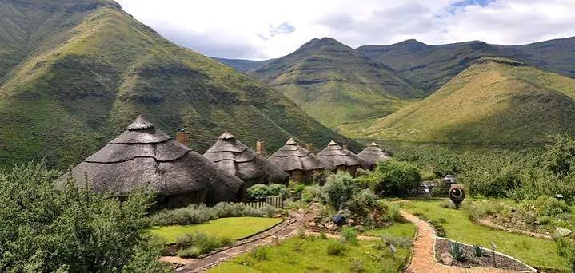
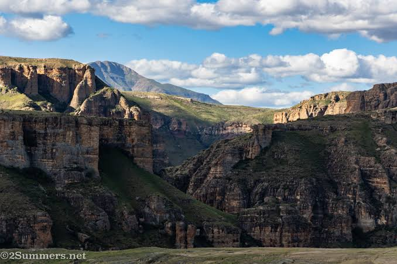
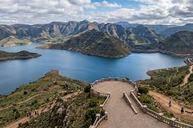
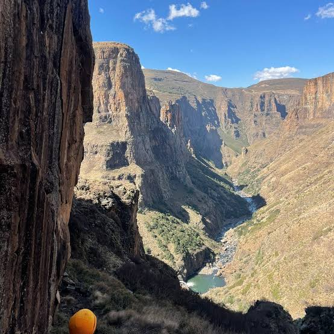
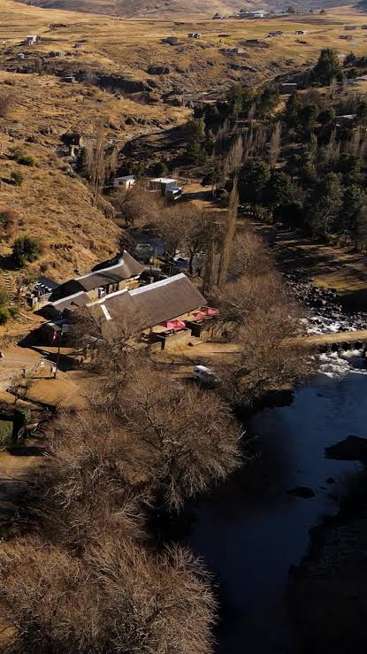
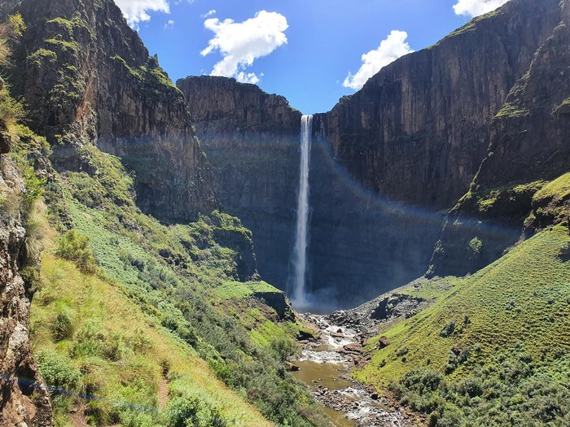
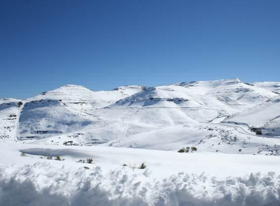

Semonkong lodge offering local food and scenic valley view

Ts'ehlanyane National Park,northen lesotho(near Leribe/Butha-Buthe)

Cliffs surrounding Maletsunyane falls, the sightly view tourist love

Mohale Dam located in the Ha Mohale area of the Maseru District

Maletsunyane river canyon:a deep basalt gorge carved by the Maletsunyane River

Mohale lodge locatewd along the river near the Mohale Dam in the Likalaneng area of Maseru

Maletsunyane fall located near the town of Semonkong , it is 192 meter-high(630ft) single-drop waterfall

Maluti Mountains under a lot of snow ,displaying a beautiful sight

Maletsunyane Falls, the early stages of formation before the current